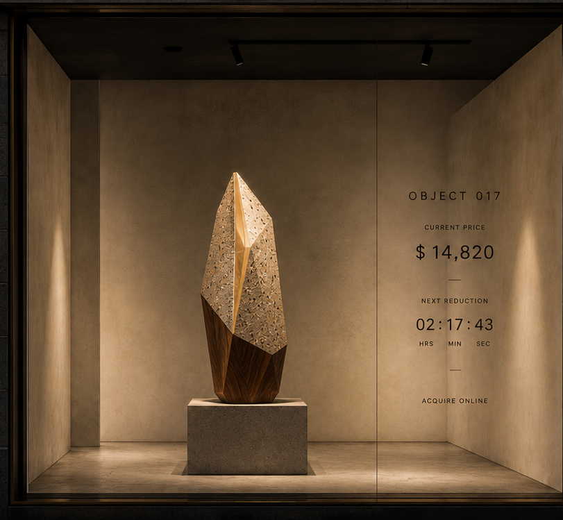

One falling price.
One person decides when it is worth owning.
OBJECT is a proposed autonomous storefront presenting a single handmade Western Australian object at a time.
Each object begins at a deliberately ambitious price. The price gradually descends until someone chooses to acquire it. The window then closes, the object departs, and another takes its place.
The project combines sculpture, design, retail and public theatre within one highly restrained format.
A reverse auction in the city
OBJECT removes almost everything associated with conventional retail.
There are no shelves, sales staff or competing products. Behind the glass is one object, one price and one decision.
The same object may remain in the city for days, weeks or months. People pass it repeatedly, watch its value change and gradually develop a relationship with it. Eventually one person decides the moment has arrived.
When the object is acquired, it leaves the window and begins a private life elsewhere.
OBJECT then begins again.
Western Australian objects
The first objects are being developed through a material language of jarrah, terrazzo and brass.
Their forms draw from the structural logic of Western Australian seed pods, gum nuts, banksia follicles, bottlebrush capsules, beehives and weathered stone. They are not literal reproductions of plants or souvenirs.
They are handmade objects intended to feel monumental, self-contained and difficult to place within a particular era.


One room. One object.
The physical space is conceived as a dark, unattended display chamber visible from the street at all hours.
The object sits alone on a permanent plinth. A minimal display on the glass identifies the object and its current price.
The information should appear quiet and architectural. No bright retail signage, promotional graphics, product descriptions or visible checkout interface should compete with the object.
The moment of acquisition
The purchase takes place online.
When an object is acquired, the storefront responds immediately. The glass becomes opaque, the display disappears and the room closes while the object is removed.
After a short interval, a new object is installed and the process restarts.